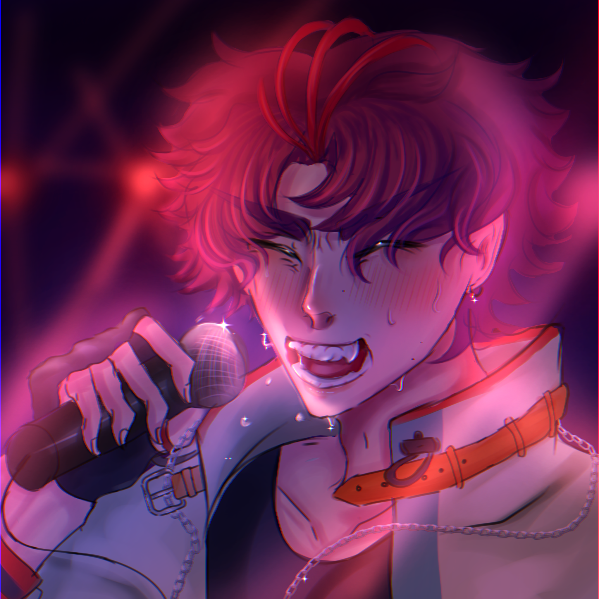
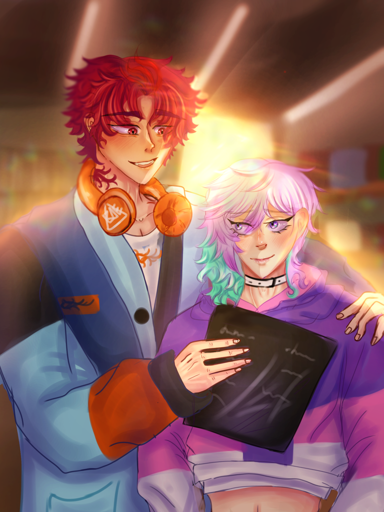
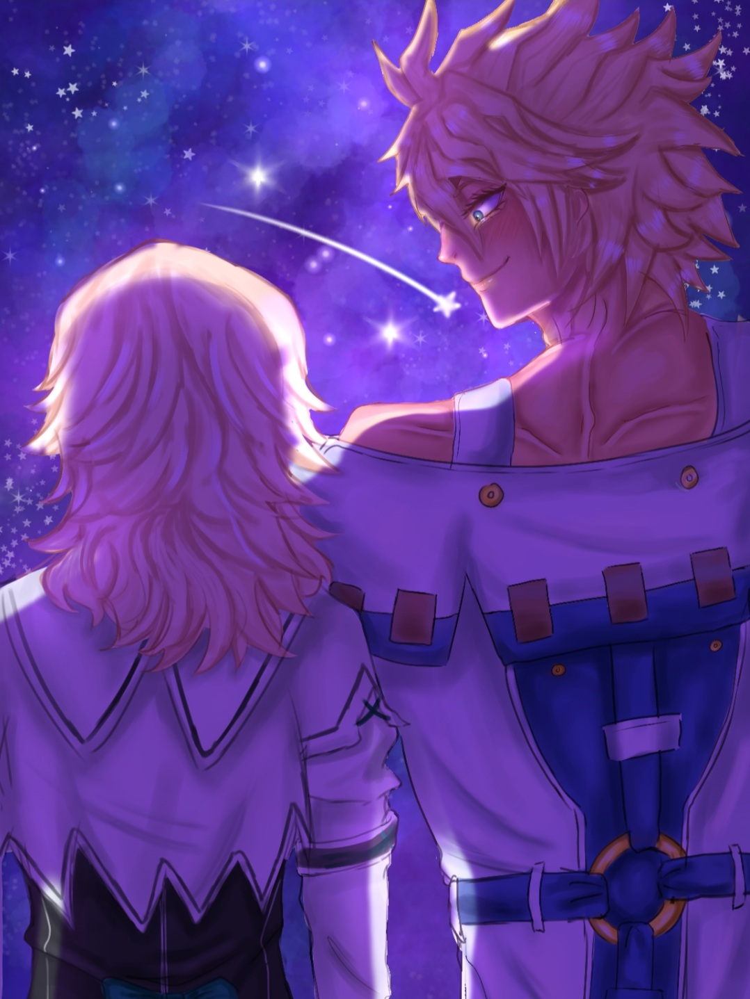
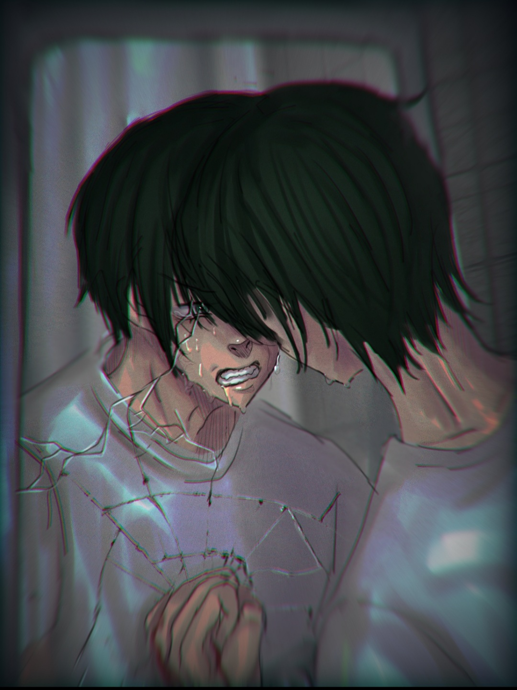
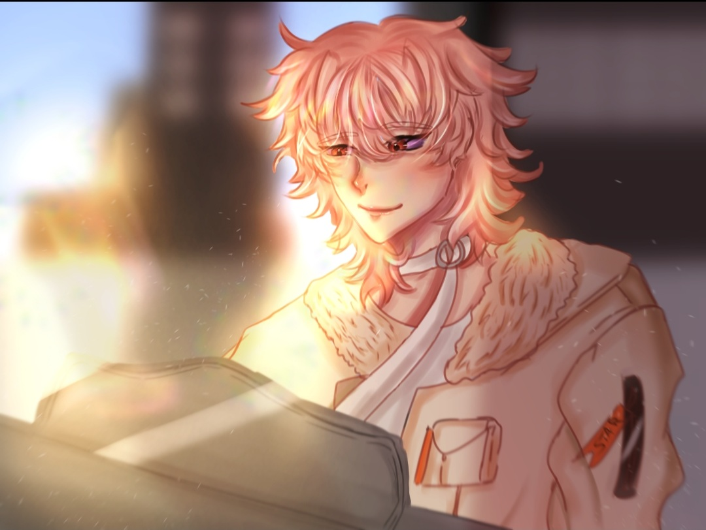
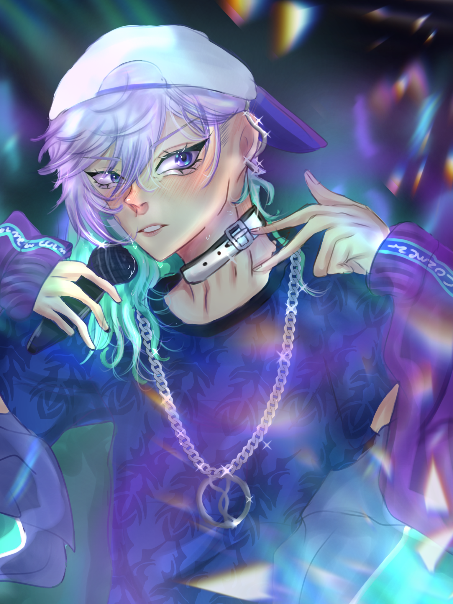
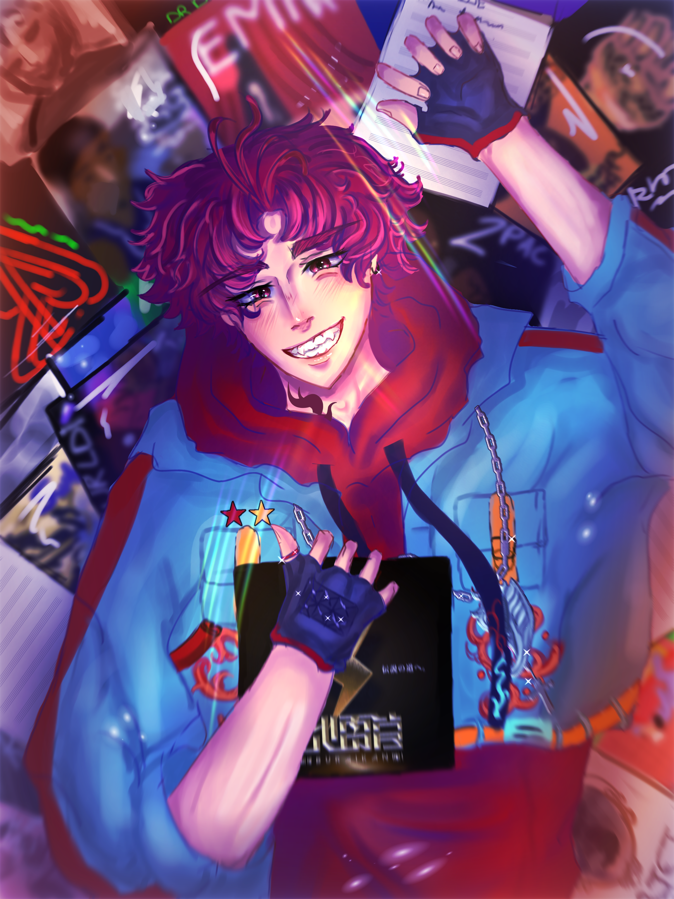

Mes Illustrations
Bienvenue dans mon univers créatif. Vous trouverez ici une sélection de mes illustrations personnelles, nées de mon intérêt pour le dessin, le travail des volumes et l'harmonie des teintes.
Cliquez sur une illustration pour la contempler en grand format.






